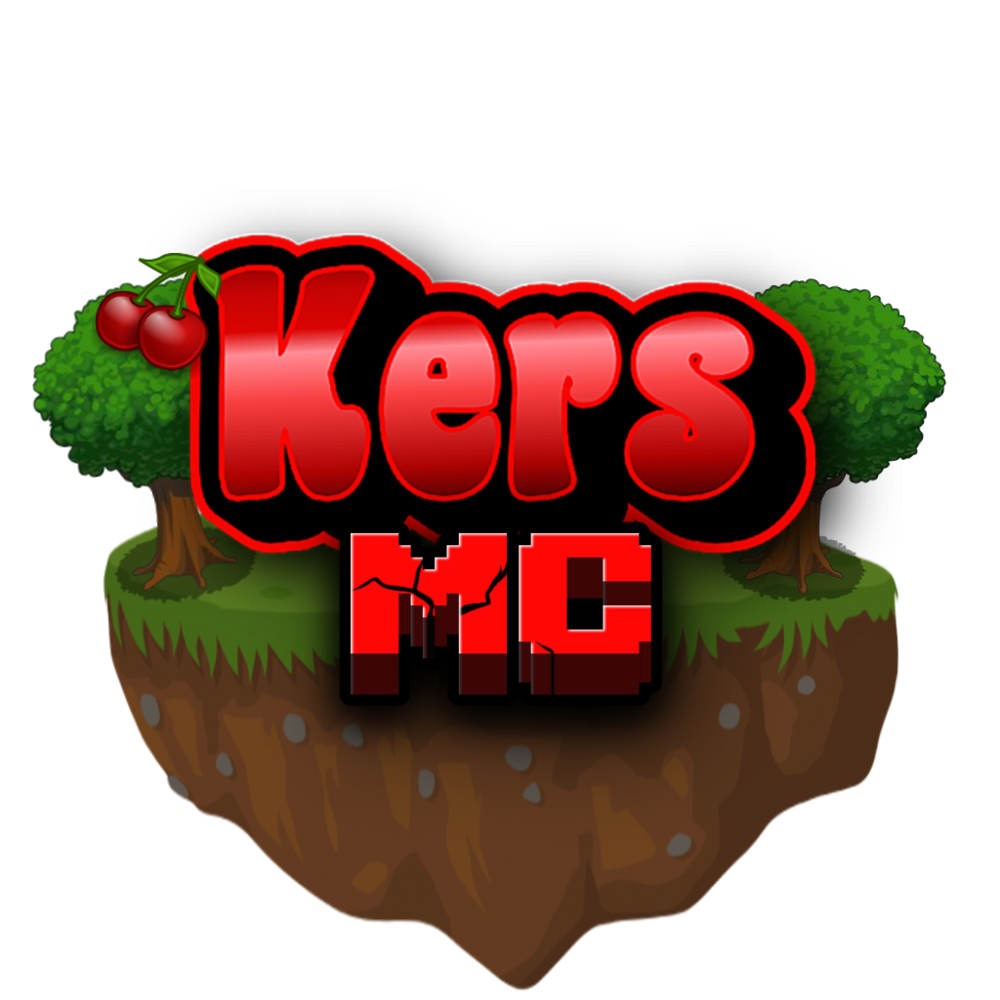

KersMC biedt een leuke Minecraft server die altijd voor iedereen toegankelijk is. Je kan joinen via Java en via Bedrock.
In de Discord server van KersMC kan je gezellig meepraten met de andere mensen, je kan er vragen stellen en de nieuwste updates als eerste meekrijgen, voor meer informatie klik je hier.
Discord is gratis, dus maak snel een account aan.
Tot snel op KersMC!
KersMC is begonnen aan season 2: Hardcore! Als je dood gaat kan je een uur niet spelen! Durf jij het aan?
Durf jij nog aan om mee te spelen? Dit seizoen staat pvp ook aan, maar is alleen toegestaan in speciale gevallen. Voor extra uitleg kan je natuurlijk altijd terecht bij een moderator, in de Minecraft server of in de Discord server. Stel gerust al je vragen, de moderators zullen al je vragen zo snel mogelijk beantwoorden.